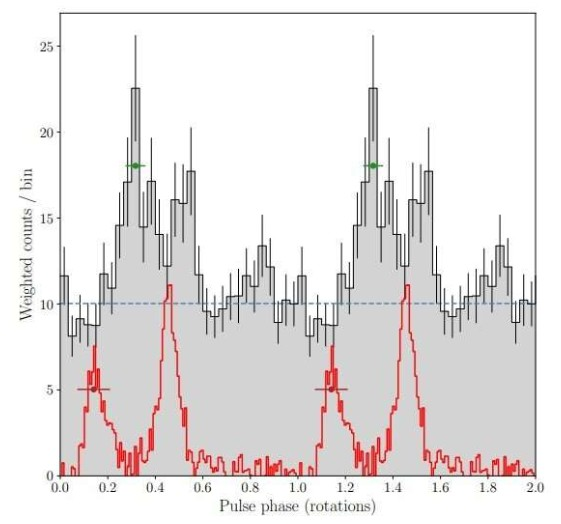
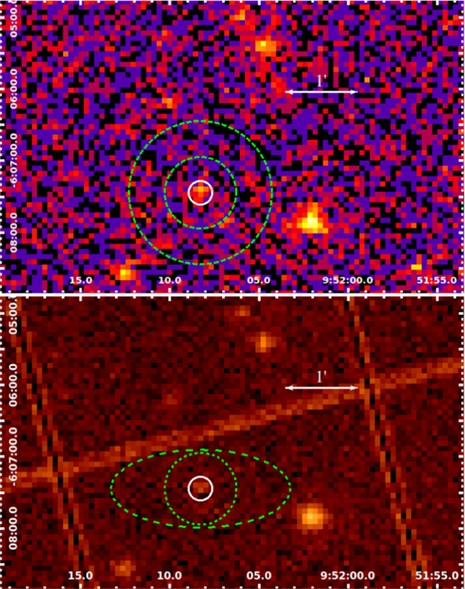
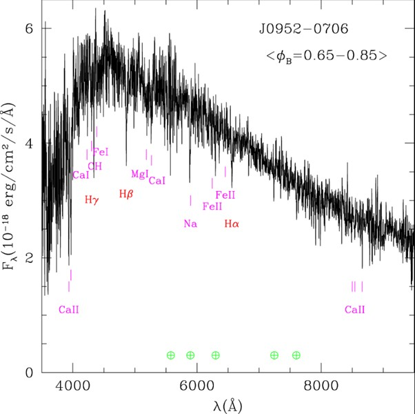

| Abstract |
| Discovery |
| Gamma-ray pulsations |
| XMM-Newton Observations |
| The companion |
| Using the companion to determine mass and speed |
| Mass Implications |
| Conclusion |
| Refrence List |

PSR J0952-0607 is a remarkable millisecond pulsar, distinguished by its unprecedented spin period of 1.41 milliseconds, making it the fastest-spinning pulsar currently known in the Milky Way. Located approximately 20,000 light-years away in the constellation Sextans, this pulsar resides in a "black widow" binary system, where it is accreting material from a low-mass companion star. In this paper, we examine the key characteristics of PSR J0952-0607, including its spin dynamics, mass estimates, and binary interaction processes. We discuss the implications of its extreme properties for models of neutron star evolution.
In 2017, Bassa et al.(2017) discovered this spinning pulsar and measured a spin period of Ps=1.41ms, bookmarking its spot as the fastest spinning pulsar in the Milky Way disk. Then, Neider et al.(2019) verified it to be a gamma ray pulsar, allowing it to be detected with the NASA Fermi Large Area Telescope (LAT) NASA, .( 2008), opening new windows of opportunities for neutron stars to be studied and discovered. A gamma-ray pulsar is an extremely compact neutron star that accelerates charged particles to relativistic speeds in an extremely powerful magnetic field. This process induces gamma radiation, far above the dense core of the star which is then picked up in pulses by the LAT.
PSR J0952-0607 has a spin frequency of 707 Hz but is very faint in the intensity of gamma rays that it produces with many parameters of the neutron star still unknown. According to the independent study from Lars Nieder of the Max Planck Institute for Gravitational Physics, PSR J0952-0607 exhibits 2 peaks which separated by approximately 0.2 rotations of the pulsar and in addition to this, the phase lag between the gamma rays and radio pulse profile is close to 0.15 which is a typical value in neutron stars like this. ( Nowakowski, 2019)
The European Space Agency's (ESA) X-ray Multi-Mirror Mission (XMM-Newton) was launched by an Ariane 504 on December 10th 1999. (ESA, 2024) This telescope was used to observe PSR J0952-0607 using a thin optical filter and full frame imaging mode. This measurement lasted 71.2 ks. The figure below shows the images recorded of the field around PSR J0952-0607.
The upper image is the MOS2 and the lower one is the pn image. In both images the inner solid circle of radius 10” is used for source spectral extraction. Source extraction refers to calculating and reporting properties of astronomical points of interest or astronomical image processing and the extraction of complex radio sources. ( Zhu, 2020)
After much in depth observation, a low-mass stellar companion of PSR J0952-0607 was also discovered, but with much difficulty as it is constantly being irradiated and evaporated by pulsar luminosity. After studying the orbital period of the pulsar around its stellar companion, a value of Pb =6.42 hours was discovered LRIS; Oke et al. (1995). The spectroscopic strategy used to observe PSR J0952-0607, was recording half-nights which ideally covered optical maximum brightness. However, none of the nights were especially good for observing and several additional half nights were not put into action due to COVID-19 and weather conditions. (Romani et al. 2022).
In comparison to stellar objects that we all know, such as the Sun, PSR J0952-0607 is 2.35 times the mass of our Sun. This pulsar also completes one full rotation every 1.41 milliseconds, making it the second fastest pulsar we know of Croswell,.( 2022). Regarding the measurement and discovery of these values, the RV amplitude was measured via IRAF rvsao Kurtz & Mink, .(1998) cross-correlation using the 3800-9500 Å range (using an Echelle Fiber-fed Spectrograph) Chakraborty, .( 2014) excluding wavelength near strong telluric features. The spectra were resampled to 8192 wavelengths and using a Fourier space with a lower cosine-bell filter with lower cutoff from 20-100 and upper cutoff running from 1000-1800, they were filtered. The average companion spectrum near ϕB* =0.75 is shown in the below figure:
* ΦB - Flux
Among other spider binaries, the process of finding precise measurements of mass for J0952 is a much easier process than usual since it has the advantage that complex modelling effects used on other binaries such as hot spots and extreme gravity darkening are not needed. This is a consequence of its large Pb and weak pulsar heating. However, these factors also mean that the companion of the pulsar is barely visible for measurement. The Keck-Telescope spectrophotometry used has allowed for the binary properties to be measured, constraining masses with sufficient precision.
With a mass of 2.35 solar masses, PSR J0952-0607 shows some of the most astounding features and conditions of any stellar object and since its discovery has pushed physicists further to solve the constraints it imposes on the dense-matter equation of state - which describes the relationship between composition, density and pressure in a regime that is impossible to replicate in Earth laboratories. (Marino et al., 2024).
Bassa1, C.G. et al. (2017) IOPscience, The Astrophysical Journal Letters. Available at: https://iopscience.iop.org/article/10.3847/2041-8213/aa8400/meta (Accessed: 02 December 2024).
Chakraborty, A. 2014) The PRL stabilized high-resolution echelle fiber-fed spectrograph: Instrument description and first radial velocity results on JSTOR, The PRL Stabilized High-Resolution Echelle Fiber-fed Spectrograph: Instrument Description and First Radial Velocity Results. Available at: https://www.jstor.org/stable/10.1086/675352 (Accessed: 02 December 2024).
Croswell, K. (2022) The heaviest neutron star on record is 2.35 times the mass of the sun, Science News. Available at: https://www.sciencenews.org/article/heaviest-neutron-star-mass-sun-record-black-holes (Accessed: 02 December 2024).
ESA (2024) Navigation, Cosmos. Available at: https://www.cosmos.esa.int/web/xmm-newton (Accessed: 02 December 2024).
Kurtz1, M.J. and Mink1, D.J. (1998) IOPscience, Publications of the Astronomical Society of the Pacific. Available at: https://iopscience.iop.org/article/10.1086/316207/meta (Accessed: 02 December 2024).
Marino, A. et al. (2024) Constraints on the dense matter equation of state from young and cold isolated neutron stars, Nature News. Available at: https://www.nature.com/articles/s41550-024-02291-y#:~:text=Their%20internal%20structure%2C%20mass%E2%80%93radius%20relationship%20and%20overall%20behaviour,composition%2C%20in%20a%20regime%20unreachable%20in%20Earth%20laboratories. (Accessed: 02 December 2024).
NASA (2008) Fermi - NASA Science, NASA. Available at: https://science.nasa.gov/mission/fermi/ (Accessed: 20 November 2024).
Nieder1, L. et al. (2019) IOPscience, The Astrophysical Journal. Available at: https://iopscience.iop.org/article/10.3847/1538-4357/ab357e/meta (Accessed: 02 December 2024).
Nowakowski, T. (2019) Gamma-ray pulsations detected from the pulsar J0952−0607. Available at: https://phys.org/news/2019-06-gamma-ray-pulsations-pulsar-j09520607.html (Accessed: 02 December 2024).
Oke, J.B. et al. (1995) IOPscience, Publications of the Astronomical Society of the Pacific. Available at: https://iopscience.iop.org/article/10.1086/133562/meta (Accessed: 01 December 2024).
Romani1, R.W. et al. (2022) IOPscience, The Astrophysical Journal Letters. Available at: https://iopscience.iop.org/article/10.3847/2041-8213/ac8007#:~:text=Pulsar%20PSR%20J0952%E2%88%920607%20%28hereafter%20J0952%29%20was%20discovered%20by,being%20irradiated%20and%20evaporated%20by%20the%20pulsar%20luminosity. (Accessed: 02 December 2024).
Zheng, W. (2022) (PDF) PSR J0952−0607: The fastest and heaviest known ..., PSR J0952−0607: The Fastest and Heaviest Known Galactic Neutron Star. Available at: https://www.researchgate.net/publication/362275468_PSR_J0952-0607_The_Fastest_and_Heaviest_Known_Galactic_Neutron_Star (Accessed: 02 December 2024).
Zhu, Y. (2020) Source extraction, Source Extraction - an overview | ScienceDirect Topics. Available at: https://www.sciencedirect.com/topics/computer-science/source-extraction#:~:text=Source%20extraction%20refers%20to%20the%20process%20of%20calculating,the%20identification%20and%20extraction%20of%20complex%20radio%20sources. (Accessed: 02 December 2024).